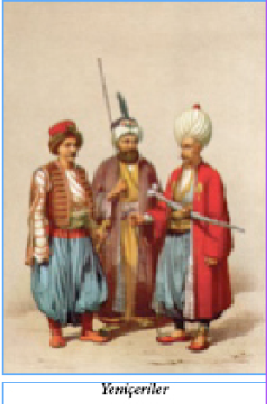
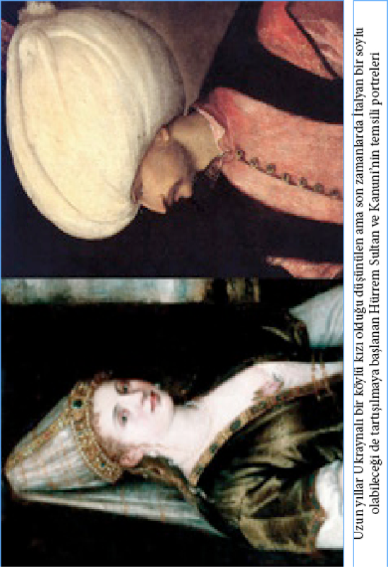

BAKİRE MERAKLISI KIRIMLI RAMİZ PAŞA
Koyu tutucularla yeniçeriler tarafından tahtından indirilen ilerici padişah III. Selim’i tekrar tahta çıkarmak için İstanbul’da bir hükümet darbesi yapan Rusçuk âyanı Alemdar Mustafa Paşa ile onu bu harekete teşvik eden Sultan Selim taraftarı devlet adamlarına tarihimizde “Rusçuk Yârânı” denilir. Rusçuk Yârânı ve Alemdar Mustafa Paşa hükümet darbesini başarmış, fakat III. Selim de düşmanları tarafından sarayda öldürülmüştü. Onun yerine II. Mahmut’u padişah yapan Rusçuk Yârânı kısa zaman içinde iktidarın neşesiyle kendilerini çılgın bir sefahat hayatına kaptırdılar. Saraylarının, konaklarının yer altındaki bodrumlarını mükellef salonlar halinde dayatıp döşettiler, muazzam avizelerle aydınlattılar ve buraları zevk âlemlerine mekan oldu. Rusçuk Yârânı’nın içinde en aydın kişi Kaptan Paşa olan Kırımlı Ramiz Paşa idi. Kendisi divan sahibi şairdi, ama o bile bir masalda dinlediği “Hataî” cariyelerini bulmak için Gürcistan, Kafkasya, Cezayir ve Mısır taraflarına adamlar göndermiş, binlerce altın harcamıştı. Hataî cariyeler (efsanelere göre) her ilişki sonrasında bile bekaretlerini daima muhafaza eden kızlarmış…
DENİZ DİBİNDEKİ SERVET
Silivri açıklarında denizin dibinde en az sekiz-on bin altın lira değerinde elmas vardır. Reşat Ekrem Koçu’nun aktardığına göre de hikâyesi şudur: II. Mahmut vapurla Gelibolu’ya kadar bir seyahate çıkmıştı. Dönüşte gemi Silivri açıklarında bir fırtınaya tutuldu ve geminin arkasına bağlı olan saltanat kayığı içindeki kıymetli eşyalarla beraber battı. Bu eşyalar arasında Padişah’ın sapı elmaslarla donatılmış şemsiyesi de vardı.
LATİN HARFLERİYLE OSMANLI TÜRKÇESİ
III. Selim’in kız kardeşi Hatice Sultan Latin harfleriyle Türkçe yazan ilk insandır. 1804 yılında Hatice Sultan’a ait Ortaköy-Kuruçeşme arasındaki Neşetâbâd Sarayı’nın kısmi onarım ve iç dekorasyonunu yapan mimar Antoine Ignace Melling biraz Türkçe biliyordu, ama Arap alfabesini okuyup yazamıyordu. Tam 18 yıl İstanbul’da yaşayan Melling burada kaldığı dönemde büyük tarihi ve sanatsal değeri olan gravürler de yapmıştı. Sanatçının haberleşme konusundaki sıkıntısını ortadan kaldırmak isteyen Hatice Sultan Latin alfabesini öğrendi ve ona notlarını bu biçimde göndermeye başladı. Böylece harf devriminden 125 yıl önce Türkçeyi Latin alfabesiyle yazmış oluyorlardı. Bu mektuplar şu anda Fransa’daki özel bir koleksiyonda korunmaktadır, Jacques Perot ve Frédéric Hitzel tarafından derlenerek yayımlanmışlardır.
Melling İstanbul’dan sonra Fransa’ya gitmiş ve orada da Napolyon’un eşi Josephine’in yanında “manzara ressamı” olarak çalışmıştır…
YANGINDAN KAÇARKEN SELE TUTULANLAR

18 Temmuz 1811 gecesi Beyoğlu’nda büyük bir yangın çıkmış, birçok ev ve dükkan alevler altında kalmıştı. Ne var ki sabaha karşı şiddetli bir yağmur başlayıp yangını söndürdü. Ancak yağmur gittikçe şiddetlenerek devam etti ve şimdiki Gümüşsuyu yokuşundan inen sellerle tüm Beşiktaş semti sular altında kaldı. O zamanlar bölgede bulunan Beşiktaş Deresi de taşınca yakında bulunan Beşiktaş İskele Hamamı’na sığınmış, yağmurun dinmesini bekleyen hamam uşakları, tellaklar ve bazı müşteriler sel sularından boğulup öldüler.
İSTANBUL’DA VEBA SALGINI
Ortaçağ’da Avrupa’yı kasıp kavuran ve o zamanki Avrupa nüfusunun 1/3’ünü öldüren veba dönem dönem Osmanlı’nın da başına bela olmuştu. Bu veba salgınlarından en vahimi ise 1812 yılında yaşanan ve dönemin İstanbul’unda tam bir dehşet havası estiren salgındı.
Hastalık büyük şehirde o kadar korkunç bir hal almıştı ki, padişahın emri ile sur kapılarına konulan gizli memurlar bir günde her kapıdan 50-60 ila 300 arasında cenaze çıktığını tespit etmişlerdi, üstelik bu rakamlara şehir içinde gömülenler dahil değildi. Zamanın gümrük emini tarafından düzenlenen bir resmi belgeye göre, bir buçuk ay içinde İstanbul’da her gün 850-900 kişi ölmüş, Ramazan ayında ise ölü sayısı 1200’e kadar çıkmıştı. Hastalığın en şiddetli hüküm sürdüğü semtler bilhassa ayak takımının, bekâr uşaklarının kalabalık olduğu Tahtakale, Yemiş’den Bahçekapı’ya kadar olan sahil parçası, Galata ve Üsküdar’dı; çünkü buralardaki bekâr odaları birer pislik yuvası halindeydi. Aslında, aynı zamanda birer günah ve haşarat yatağı olduğundan, hükümet ilk tedbir olarak bu bekâr odalarının yıktırılmasını emretti. Odalar bir gün içinde yıkıldı. Bu işle görevlendirilenler tüyler ürpertici manzaralarla karşılaştılar: Ölenlerin çoğu ayakdaşları tarafından sokaklarda yıkanıp birer tahta parçası üzerine konularak götürülüyordu. Yıkılan odalarda unutulmuş, kokuşmuş yüzlerce ölü bulundu. Bunların arasında da birçok uygunsuz gençler, fahişeler, bu fahişelerin beşikte çocukları görüldü. Bahçekapısı’nda bir sokak vardı ki, şehrin gerçek anlamda bir batakhanesi idi ve halk ağzında “Melekgirmez Sokağı” denilirdi ki, bu müthiş vebadan sonra devrin padişahı II. Mahmut bu sokakta bir cami yaptırmış, adını da “Hidayet Camii” koymuştu.
Salgın sırasında padişah Beşiktaş sarayında bulunuyordu, ikindi namazlarına Ayasofya’ya gelirdi. Padişahlar kadın cenazesinde namaza durmazlardı, hocalar tarafından “hastalığın giderilmesine sebeptir” diye rica olundu, Sultan Mahmut üç dört defa Ayasofya’da cenaze namazı kıldı ki bir seferinde 19 erkek, 8 kadın ve 11 kız ve oğlan olmak üzere 38 cenazenin namazı kılınmıştı. Yakınlarından bazı kimselerin tavsiyesi ile hastalığın giderilmesi için, Sultan Mahmut yatsı namazından sonra minarelerden yüksek sesle “Ahkaf Suresi” okunmasını emretmişti; bunun üzerine halk dehşet içinde kaldı. Ramazan bayramında ise, bayramlaşmak münasebetiyle halkın birbiriyle teması arttığından, hastalık tüyler ürpertici bir hal aldı. Bayramın ertesi ölümler günde 3000 kişiye kadar çıktı; ulemadan bir kısmı padişaha müracaat ederek: “Ahkaf suresi Âd Kavmi’nin helâk olacağını haber verir, böyle günlerde okunması hiç uygun değildir” dediler. Emir geri alındı, hatta geri alınmakla da kalınmayarak, evlerde bile Kur’an okunurken bu surenin okunmaması emredildi.
Yine bu 1227 (Hicri 1812) Ramazanı’nda geceleri bekçilerin davul çalması, mâni ve türkü okuması, kahvehanelerde tavla, dama ve satranç vesair oyunlar oynanması, meddahların hikâye anlatması yasak edilmiştir.
YENİÇERİ KAHVELERİ
Eski İstanbul kahvehaneleri arasında dikkate değer olanları, ocaklarının kaldırılmasına kadar İstanbul’da pek gürültülü bir hayata sahne olmuş bulunan yeniçeri kahvehaneleridir. Kahvehanelerin kapısı üzerine mensup oldukları yeniçeri ortasının nişanını asmağa başlamışlardı. Her ortanın yoldaşları da kendi nişanlarını taşıyan kahvehanelere çıkar olmuşlardı.
IV. Mustafa döneminin bir vakanüvisi yeniçeri kahvelerini şöyle tarif etmektedir:
“Yeniçeri kahveleri baldırı çıplak külhanilerin sabahtan akşama kadar saz ve sözle zevk ve sefa sürdükleri, afyon ve esrar ile keyif çatıp eğlendikleri yerlerdi. Hemen hepsi gayet büyük ve fevkalâde süslü olan bu kahvehaneler, genellikle İstanbul’un manzarası en güzel yerlerine, bilhassa denize nazır sur bedenleri üstüne yapılır veya deniz üstüne kazıklarla atılmış salaşlarda kurulurdu. Her kahvehanenin mahbup köçekleri, sazendeleri, kıssahanları20, eli ayağı düzgün, tüysüz uşakları bulunurdu.
20 Kıssahan: Kahve kahve dolaşıp kıssalar anlatan zamane hikayecisi…
Peykeler kilim ve seccadeler, kuzu pöstekileri ile döşenir, duvarlara Bektaşi levhaları asılır, yerlere fırdolayı hasır döşenirdi. Tavandan peykelerin hizasına kadar inen camların önü çiçek saksıları, bilhassa fesleğenlerle donatılırdı. Kahvehanenin ortasında daima, etrafı saksılarla süslü bir havuz ve fıskiye bulunurdu. Kahve ocakları ise bir gelin köşesi gibi süslenirdi. Kapaklı ve açık boy boy cezveler, dolap dolap fincanlar, en az birkaç tanesi gümüş ve altın başlıklı, billûr şişeli olmak üzere nargileler, kehribar ağızlıklı çubuklar, çiçekli oymalı levhalar bir servet değerinde olurdu. Ocak başında da, genellikle kahvehane sahibinin evlât niyetine büyüttüğü bir delikanlı bulunurdu.
Her yeniçeri kahvehane yaptırıp açamazdı, kahvehane sahiplerinin hemen hepsi en namlı yeniçeri zorbaları idi. Ocağın son yıllarında kahvehane sahibi olan yeniçeri zorbalarının en namlıları Kuledibi kahvehanesinin sahibi Kalyoncu Burunsuz Mustafa, Hendek kahvehanesinin sahibi Tersane Başçavuşu Darıcalı İbrahim Çavuş, Çardak iskelesi kahvehanesinin sahibi 56’lı yoldaşlarından Galatalı Hüseyin Ağa, Togyar Tepesi kahvehanesinin sahibi Tiflisli Ali, Balaban İskelesi kahvehanesinin sahibi Kız Mustafa, Esir Pazarı kahvehanesinin sahibi Babadağlı Hasan ve Irgat Pazarı kahvehanesinin sahibi Turnacı Ömer idi.
Yeni yapılan bir yeniçeri kahvehanesi döşenip dayandıktan sonra, kapısının üstüne asılacak olan orta nişanı için parlak bir alay düzenlenerek açılırdı. Orta nişanı genelde şimşir, nadiren de abanoz üzerine kabartma olarak işlenir, uygun boyalarla boyanır ve tezhip edilirdi. Kahvehanelerin nişan alayı Süleymaniye’deki Ağa Kapısı’ndan başlardı. Nişan levhasını Baş Karakullukçu başının üstünde tutardı. Kırk, elli ve hatta daha fazla sayıda delikanlı altın ve gümüş kınlı hançerler, Keşmir şalları, Cezayir kesimi esvaplarıyla levhanın önü ve ardı sıra yürürlerdi.
Alayın en önünde de elleri baltalı Bektaşi babaları bulunurdu. Soytarılar, çengiler, köçekler her türlü maskaralık yapıp oyun oynarlar, atlı alay çavuşları, nişanın geçeceği yollardaki halkı kırbaç ve kamçı ile dağıtarak: “Savulun bre savulun… Nişan geliyor!” diye bağırırlardı.
Yeni bir kahvehane açan bir yeniçeri ağası kahvehanesini kesesinden neredeyse metelik harcamadan dayar döşerdi. O semtin Müslim ve gayrimüslim, zengin ve hallice, ne kadar tanınmış siması varsa adlarını bir deftere yazar ve her adın yanına dilediği eşyayı kaydederdi. Sonra da adamlarından gözü pek, zıpırlığı, itliği ile tanınmış birisine bu defteri verir ve adları kayıtlı olanlara gönderirdi; bu serseri de: “Ağam selam ediyor, defter gönderdi, kahvehane hediyesini bekler!” diyerek kesilen haracı tebliğ ederdi. Bu tebliği alanlar da, hiç tereddüt etmeden hediyesini gönderir, hatta bazen de korkusundan bizzat götürürdü. Hele götürmesin! Ne mahallesinde evinde, ne de dükkânında, işinde gücünde rahat yüzü göremez, türlü saldırılara uğrar ve hatta öldürülebilirdi. Yeni açılan bir yeniçeri kahvesine, yeniçeriler kendi aralarındaki en makbul hediye olan kanarya kuşu götürürdü. Kanarya kahvehane için bir uğur, maskot sayılırdı. Büyük bir yeniçeri kahvehanesinde en az 30-40 kanarya kafesi bulunurdu.”
TAVŞANLAR
Eski dönemlerde büyük meyhanelerde “Tavşan” denen özel köçekler vardı. Bu tavşanların kendilerine özel, çok çekici kıyafetleri vardı. Ayaklarına aşık kemiklerine kadar düşen mavi veya kırmızı şalvar giyerler, şalvarlarının ağı da yerde sürünür, bellerine al kuşak sararlar, çıplak gövdenin üzerine kolsuz meme altlarına kadar ancak inen kısa ve altın sırma işlemeli bir yelek giyerlerdi… Başlarında da mavi püsküllü al fes… Omuzlarına kadar rengârenk boncuklar, hurda inciler dizerlerdi. Dansa yalınayak çıkarlardı. Tavşanların olsun sıradan köçeklerin olsun oyunları, zamanımızın ritmik dansları gibi, harikulâde görsel bir şölendi…
Köçekleri, tavşanları görmek için meyhanelere gidemeyen devlet erkânı, hatta padişah, onları konaklarına, yalılarına, Saray-ı Hümayun’a getirtirler, verdikleri ziyafetlerde, muhteşem bir dekor içinde oynatırlardı.

HAMAMLAR VE KÜLHANBEYLERİ
Sonraları “mangal yürekli kabadayı” anlamında kullanılsa da külhanbeyi aslında “külhan” denen hamam ocağının sürekli yanmasını sağlamak için o ocağa kömür atan kişidir. Külhanbeyleri kimsesiz, cesur ve gözünü budaktan sakınmayacak gençlerden seçilir ve belli ritüeller sonucu ağabeylerinin arasına katılırlardı. Külhanbeyleri arasından da elbette it uğursuz takımına ayak uyduranlar çıkmıştı, hatta belli dönemlerde bazı hamamlara gitmek düpedüz ayağıyla soyulmaya gitmek anlamına gelirdi.
Özellikle Fındıklı Hamamı, Tophane’de Kılıç Ali Paşa Hamamı, Galata’da Buğuluca Hamamı, Çeşme Meydanı’nda Sokollu Mehmet Paşa’nın Yeşil Direkli Hamamı, Kasımpaşa Büyük Hamamı, Küçükpazar Hamamı, Tahtakale’de Rüstem Paşa Hamamı, Bahçekapı’da Sultan Hamamı, Yenicami’de Haseki Hamamı, Yıldız Hamamı, Hoca Paşa Hamamı, Küçükağa Hamamı, Şengül Hamamı, Kadırga Hamamı, Gedikpaşa Hamamı, Çemberlitaş Valide Hamamı, Aksaray Hamamı gibi çarşı ve pazar ortasındaki hamamlara kendini bilenler girmezdi. Boş bulunup girenlerin ya adı kötüye çıkar ya da başlarına bir bela gelmeden hamamdan çıkamazlardı. En azından para kesesi ve saati muhakkak alınır, şikayete kalkarsa dayak yerdi. Bazılarının da elbisesi, çizmesi alınır; adamcağız aranacak olsa: “Geldiğinde elbisen yoktu ve yalınayaktın!” yanıtını alırdı. Geceleri de, bekâr uşakları bu hamamların içinde ve camekân odalarında yatar bu yüzden de türlü nedenlerle sık sık kanlı olaylar çıkardı. Bu hamam zorbaları İstanbul’da ilk defa “külhanbeyi” unvanını almışlardır ve ilk külhanbeyleri de Gedikpaşa Hamamı’nın bekâr odalarından çıkmıştır.
CELLÂTLAR VE İDAM CEZALARI
Osmanlı devletinin resmî cellât teşkilatı bir Cellâtbaşının idaresinde, sayıları devir devir değişen türlü türlü cellâtlardan oluşmuştu ki hepsi de aslen Kıptî idi. Cellâtbaşı ile cellâtlar Bostancıbaşı Ağa’nın emrinde idi. İdam hükmü Bostancıbaşı’ya verilir, o da yerine göre, bazen bizzat nezaret ederek hükmü yerine getirtirdi. Eğer öldürülecek önemli bir kişiyse idamda Bostancıbaşı muhakkak bulunur, hükmü de Cellâtbaşı hünerine en çok güvendiği bir veya iki cellât ile infaz ederdi ki, bunlara da “cellât yamağı” denirdi. Bostancıbaşı Ağa sarayın en büyük zabitlerinden biri olup başlıca görevleri, emrindeki bostancı neferleriyle sarayın ve padişahın şahsen korunması ile İstanbul’un, Boğaziçi ile beraber bütün sahillerinin ve limanın güvenlik ve korunmasına bakmaktı.
Siyasî mahkûmlar yağlı kement ile boğulurdu. Bazen, idamdan sonra başı “şifre” denilen gayet keskin hususî bir ustura ile gövdesinden ayrılır, ya bir “ibret taşı”nın üstüne konulur, ya da sarayın şehre açılan büyük kapısının, Bâb-ı Hümayun’un önüne atılırdı. Sabıkalı hırsızlar, bilhassa gece hırsızları şehrin uygun görülen bir yerinde, genellikle de suçun işlendiği semtte, hatta bazen girdiğin evin, dükkânın veya hanın kapısında asılırdı. Katiller genellikle işkenceyle öldürülürdü. Askerlerin, yani sipahi veya yeniçerilerin, başları kesilir, cesetleri, ayaklarına taş bağlanarak denize atılırdı. Bazen de mahkûma sahip olduğu tahmin edilen gizli mallarının yerini söyletmek için, idamdan evvel herhangi bir suretle ve cellâtlar eliyle işkence yapılırdı.
İşkence ile idamın üç korkunç şekli vardı: Çengel, çarmıh, kazık… Çengel, İstanbul’da, Eminönü’nde idi, kalın kalaslardan yapılmış kale burcu gibi bir şeydi, bir adam boyundan yüksek yerine, muhtelif büyüklükte ve uzunlukta, başları yukarıya doğru kıvrık ve sivri, keskin, bir tarak şeklinde bir sıra, kasap dükkânlarında olduğu gibi, çengeller konmuştu. Mahkûm anadan doğma soyulur, elleri ve ayakları bağlanıp makaralı iplerle yukarı çekilir ve sonra birden bu müthiş çengellerin üzerine bırakılırdı. Mahkûmun vücuduna saplanan çengeller bazen derhal öldürürdü, ama çoğunlukla ölüm, müthiş acılarla uzun sürerdi. Çengel cezasına eşkıya, özellikle de korsanlar çarptırılırdı. Kaptan paşalar donanma ile Akdeniz’den dönerken hemen daima bir miktar korsan tutup getirirlerdi. Bunlardan bir kısmını kadırgaların direklerine astırır, limana dehşetle girer, bir kısmını da çengele saklardı. Çarmıh cezası da eşkıyaya ve özellikle casuslara uygulanırdı. Mahkûm yine çırılçıplak soyulur, kolları ve bacakları açık, yüzükoyun bir çarmıh üstüne sımsıkı bağlanır, omuz başları ve butlarının kaba etleri bıçak ile oyularak buralara gayet iri yağ mumları dikilir ve yakılır, çarmıh, üzerindeki mahkûm ile beraber bir devenin üstüne konularak şehirde dolaştırılır, teşhir edilirdi. Mahkûmun canı pek olup ölmezse, akşamüstü asılırdı. 17. yüzyıl ortasında asi Abaza Mehmet Paşa’nın İstanbul’da yakalanan casusları böyle idam edilmişlerdi. Kazık da muhakkak müthiş acılarla öldüren bir ceza idi: Mahkûm keza çırılçıplak soyulur, elleri ve ayakları bağlanır, bilek kalınlığında, gayet sert ağaçtan yapılmış bir yağlı kazığa çıkarılarak oturtulur, çoğunlukla da omuzlarına çarmıhta olduğu gibi bir çift yağ mumu dikilir, gezdirilerek teşhir edilirdi. Bu da eşkıyaya ve korsanlara uygulanan cezalardandı. Halktan ve sıradan kişiler, genellikle suçu işledikleri ya da yakalandıkları yerde veya Yavuz Selim Camii’nin Haliç’e inen kısmı olan Parmakkapı’da asılarak idam edilirlerdi. Yeniçerilerin idamı ise, ocak içinden yetişen cellâtlar tarafından, Rumeli Hisarı’ndaki zindanda yapılırdı ve idam, hisarın burçlarından atılan tek parelik bir top sesiyle duyurulurdu. Top sesi bir yeniçerinin daha ölümünün ilanı anlamına gelirdi.
BİR FİNCANIN HATIRI…
19. yüzyılın en zengin devlet adamlarından biri Serasker ve Sadrazam Koca Mehmet Hüsrev Paşa’dır, doksan küsur yaşına kadar yaşamıştı. Enderun Tarihi kitabının yazarı Tayyarzâde Atâ Bey 9-10 yaşlarında bir çocukmuş. Sünnet olacağı zaman babası Tayyar Ağa büyüklerin ellerini öptürmeye götürmüş. Bu arada, konağında emekli olarak oturan Koca Mehmet Hüsrev Paşa’ya da gitmişler. Paşa: “Ah yavrum, fakir zamanıma rastladın” demiş, sonra bir çekmecenin önünde bir müddet bir şeyler karıştırmış ve çocuğa hediye olarak zarflı21 bir kahve fincanı hediye etmiş. Çocuk kahve fincanını ne yapsın? Zarf bir sandığın bir köşesine atılmış. Aradan uzun yıllar geçmiş. Atâ Bey memuriyetlerde dolaşmış, önemli işlere memur edilmiş. Evlenmiş, çoluk çocuk sahibi olmuş… Zamanla gözden düşürülmüş, yıllarca zor durumlarda kalmış. Borçlanınca da ev eşyalarını ucun ucun satmağa başlamış. Evini rehin etmiş. Kısaca, çok sıkıntılı günler yaşamış. Bir gün, akşama ekmek parası bile yoktur… Aklına zamanında Hüsrev Mehmet Paşa’nın verdiği zarflı fincan gelmiş. “Götürüp şunu satayım da beş-on kuruş alayım” demiş, fakat hemen satamamış… Meğer fincan Ming sülalesi zamanından kalma bir Çin porseleni, zarfı da Memlûk sultanları devrinin işi, nadide bir sanat eseri imiş! Hararetli bir bedesten açık artırmasından sonra, zarf ve fincan satılmış Atâ Bey bütün borçlarını ödemiş, evini rehinden çıkarmış, geri kalan para ile de, bütün ailesini alıp Hacca bile gitmiş…
21 Zarf: İçine fincan veya bardak oturtulan metal kap.
İSTANBUL’DA SİLAHLANMA VE SİLAH YASAĞI
At, avrat, pusat (silah)… Geleneksel Türk töresinin yüzyıllardır değişmeyen üç temel erkeklik simgesi… Türk tarihinin çeşitli dönemlerinde belli sınırlarla silah yasağı getirilmişse de bunu pek umursayan olmamış, Türk erkeği 20. yüzyıl gelip de şehir yaşamına adapte olmaya başlayana dek silahını elinden düşürmeyi benimsememişti. Osmanlı dönemindeki ilk önemli silâh yasağı 19. yüzyıl başında, II. Mahmut zamanında, padişahın has mutemedi Hâlet Efendi döneminde konmuştur.
Hâlet Efendi’nin kötü siyaseti, devletin başına Mora ihtilâlini dolamıştı 1820 yılında İstanbul Rumlarının ayaklanarak Müslümanları katledeceği söylentisi çıktı. Hükümet büyük bir tedbirsizliğe düşerek, normalde silah taşıyanlardan başka, bütün İstanbul Müslümanlarının silahlanmasını emretti. Bu emre can-ı gönülden uyup da, tüm İstanbul halkı silahlanınca ipsiz sapsız takımı türlü rezalet ve kepazeliğe fırsat buldu. O devri yaşamış olanlardan Şâni–Zâde Mehmet Atâullah Efendi meşhur eseri Şânı–Zâde Tarihi’nde manzarayı “Ahval-i Âsitâne” (İstanbul’un Durumu) başlığı altında şöyle betimliyor:
“Öteden beri garip halleriyle tanınmış İstanbullular bu sefer de silahı bir tür süs ve ziynet eşyası, bir çocuk oyuncağı haline getirdiler. Gece ve gündüz mahalle aralarında, sokaklarda, iskelelerde, cami avlularında, yani her yerde ve boş yere, kestane fişeği gibi tüfek ve tabanca atmaya başladılar. İstanbul silah sesleriyle inleyip durdu ve silah sesinden, “bir kaza kurşununa kurban olurum” korkusundan kendileri de serseme dönüp perişan oldular. Kaza kurşunu ile kimi anasını, kimi arkadaşını, eşini veya kız kardeşini öldürdü. Bu vesile ile it uğursuz takımı da kendi çıkarları için kan döktüler. Bazı eşkıya sarraf evlerinin kapılarını kırıp girdiler; böyle saldırılara uğrayanlar malını canına feda edip şikâyette bulunamazlardı. Unkapanı tüccarından Hacı Halil Ağa’nın bir çuval içinde ve hamal sırtında sarrafına gönderdiği 7500 kuruşu Asmaaltı’nda silahlı hamallar tarafından çevrilip yağma edildi. Bir kısmı da dükkânlara girip: “Sefere gideriz” diye pabuç, çizme, elbise ve eşya gasp edip “Bezirgân, hakkını helal eyle!” diye ellerini kollarını sallayarak çıkıp giderlerdi. Dükkân sahiplerinden ağzını açanlar oracıkta öldürülürdü. İş bu hale dökülünce, ilk emrin tamamen tersine, bir silah taşıma yasağı çıkamayacağından dolayı sokaklarda, evlerde silah atılması yasak edildi. Uygunsuz takımının, soyguncuların takibi için de Yeniçeri Ağası’na emir verildi…”
KERÂMET KAVUKTA
Sultan II. Mahmut’un sadrazamı Mehmet Emin Rauf Paşa da idamlıkların infazdan önce üç gün bekletildikleri Balıkhane Kasrı’na kapatılanlardandı. Hâlet Efendi’nin hışmına uğrayıp 1818’de üç gün bu kasrın karanlık odasında ecel teri döktükten sonra, endişeyle akıbetini beklerken zindanın demir kapısı açılmış, Bostancıbaşı elinde tepsiyle içeri girmişti. Rauf Paşa korkuyla tepsideki kadehin rengine baktı önce. Eğer şerbet, beyaz kadehle gelmişse affedildiğine, kırmızı kadehle gelmişse idam edileceğine işaretti. Sonraları, Paşa’nın karşısında Bostancıbaşı’yı gördüğü an geçirdiği şok ve müthiş ölüm korkusu nedeniyle erkekliğini bile kaybettiği rivayeti çıkarılmıştır. Sultan II. Mahmut affettiği yakışıklı sadrazamına daha sonra iltifatta bulunmuştu: “Kallavinin22 böylesine yakıştığı bu başa nasıl kıyılır?”
22 Kallavi: Vezir ve sadrazamların giydikleri bir tür kavuk.